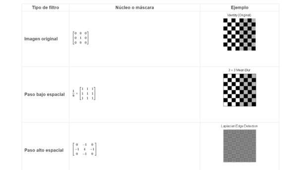
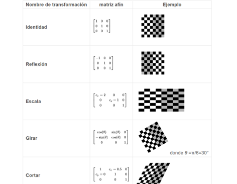

3.9.INTRODUCCIÓN AL PROCESAMIENTO DIGITAL DE IMAGENES.
Introduccion.
El término "imagen monocromática" o imagen simplemente, se refiere a una función de intensidad de luz bidimen sional f(x,y), donde x e y indican las coordenadas espaciales y el valor de f en cualquier punto (x,y) es proporcional a la luminosidad (o nivel de gris) de la imagen en dicho punto. Una imagen digital es una imagen (función) f(x,y) que ha sido discretizada tanto en coordenadas espaciales como en luminosidad. Una imagen digital puede ser considerada como una matriz cuyos índices de renglón y columna identifican un punto (un lugar en el espacio bidimensional) en la imagen y el correspondiente valor de elemento de matriz identifica el nivel de gris en aquel punto. Los elementos de estos arreglos digitales son llamados elementos de imagen o pixels.
En el tratamiento de imágenes se pueden distinguir tres etapas principales:
1. Adquisición de la imagen.
2. Procesamiento de la imagen.
3. Presentación al observador.
- Los dispositivos sensoriales realizan un número limitado de mediciones sobre las señales de entrada; estas medi ciones deben ser adecuadas para obtener aproximaciones útiles. Decidir que mediciones realizar y como usarlas de tal manera que aproximen mejor a la señales de entrada son los problemas que deben ser resueltos.
- Para la selección del procesamiento y/o codificación que se hará sobre una señal, es necesaria una interpretación de las componentes de la señal. El modelo del sistema de visión humano puede ser utilizado en ciertas etapas de procesamiento para dicha interpretación.
- Los dispositivos de despliegue sintetizan una imagen usando un número finito de respuestas básicas de desplie gue, como los puntos de fósforo utilizados en un tubo de rayos catódicos. Seleccionar el tamaño y la forma de éstas respuestas de despliegue, la configuración (número y posición relativa) y como pueden ser controlados de la mejor manera óptima para obtener imágenes con la calidad/fidelidad requerida son aspectos que deben ser cubiertos
Algunos de los problemas característicos en el diseño de estos subsistemas que involucran el uso de representacio
nes de señales son las siguientes:
Transformaciones basicas..
- convolución con núcleos diseñados específicamente (matriz de filtros) en el dominio espacial
- enmascarar regiones de frecuencia específicas en el dominio de frecuencia (Fourier)
FILTRACION
Los filtros digitales se utilizan para desenfocar y hacer más nítidas las imágenes digitales. El filtrado puede ser realizado por:

TRANSFORMACIONES AFINES
Las transformaciones afines permiten transformaciones de imagen básicas, como escalar, rotar, trasladar, reflejar y distorsionar, como se muestra en los siguientes ejemplos:

Para aplicar la matriz afín a una imagen, la imagen se convierte en una matriz en la que cada entrada corresponde a la intensidad de píxel en esa ubicación. Luego, la ubicación de cada píxel se puede representar como un vector que indica las coordenadas de ese píxel en la imagen, [x, y], donde xey son la fila y la columna de un píxel en la matriz de la imagen. Esto permite que la coordenada se multiplique por una matriz de transformación afín, que proporciona la posición en la que se copiará el valor del píxel en la imagen de salida. Sin embargo, para permitir transformaciones que requieren transformaciones de traslación, se necesitan coordenadas tridimensionales homogéneas. La tercera dimensión generalmente se establece en una constante distinta de cero, generalmente 1, de modo que la nueva coordenada sea [x, y, 1]. Esto permite que el vector de coordenadas se multiplique por una matriz de 3 por 3, lo que permite cambios de traducción. Entonces la tercera dimensión, que es la constante 1, permite la traducción.

ELIMINACION DE RUIDO
La morfología matemática es adecuada para eliminar el ruido de las imágenes. Los elementos estructurantes son importantes en la morfología matemática.
Para aplicar el método de eliminación de ruido a una imagen, la imagen se convierte en escala de grises. Una máscara con método de eliminación de ruido es una matriz lógica con. Los métodos de eliminación de ruido comienzan desde el centro de la imagen con la mitad de la altura, la mitad del ancho y terminan con el límite de la imagen del número de fila, número de columna. Vecino es un bloque en la imagen original con el límite [el punto debajo del centro: el punto arriba, el punto a la izquierda del centro: el punto a la derecha del centro].
MEJORA DE LA CALIDAD DE IMAGEN
La calidad de la imagen puede verse afectada por la vibración de la cámara, la sobreexposición, la distribución del nivel de gris demasiado centralizada y el ruido, etc. Por ejemplo, el problema del ruido se puede resolver con el método de suavizado, mientras que el problema de distribución del nivel de gris se puede mejorar con la ecualización del histograma.